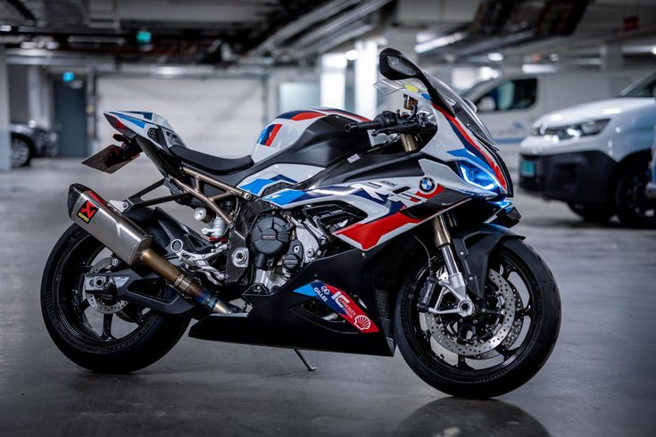
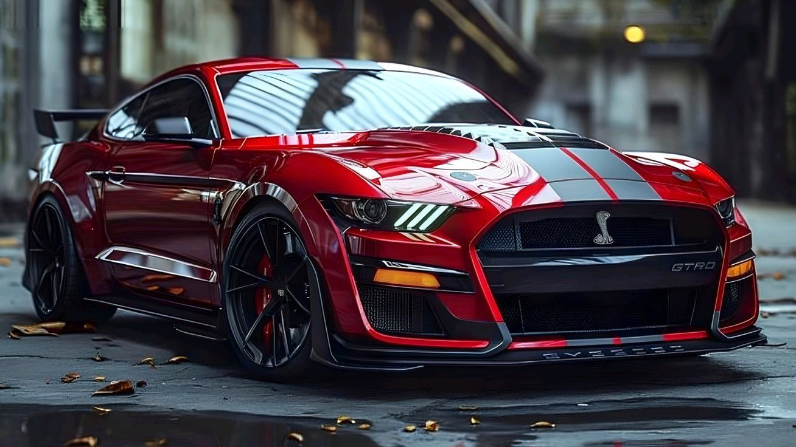

Nuestros sueños
Pasión por las motos
Las motos deportivas representan velocidad, sentimiento, tecnología y sobre todo libertad, siendo para algunos la inspiración para trabajar y así conseguir su más grande sueño...

Pasión por los carros
Los autos deportivos simbolizan esfuerzo, éxito y diseño automotriz. En esta sección exploramos los carros que admiramos...

Ingeniería de Sistemas
El conocimiento en programación y tecnología es el camino que seguiremos para alcanzar nuestras metas profesionales.